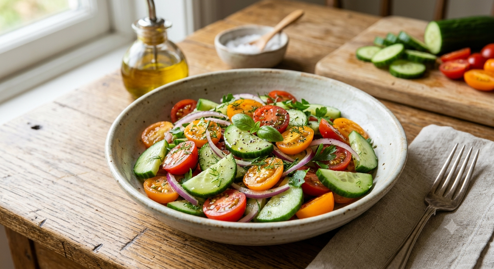

Cucumber & Tomato Salad

Description
This refreshing cucumber and tomato salad combines crisp cucumbers, juicy tomatoes, and fresh onions
with a simple lemon dressing. It is light, healthy, and full of fresh flavors.
You can enjoy it as a quick snack, a side dish, or a light meal. It takes only a few minutes to prepare
and does not require any cooking!
Ingredients
- Cucumber
- Tomatoes
- Red onion
- Lemon juice
- Fresh coriander
- Salt and pepper
- Olive oil
Steps
- Prepare the Vegetables: Wash the cucumber and tomatoes. Cut them into small pieces and slice the red onion
thinly.
- Combine the Vegetables: Add the cucumber, tomatoes, red onion, and fresh coriander to a large bowl.
- Make the Dressing: Mix the lemon juice, olive oil, salt, and pepper in a small bowl.
- Mix the Salad: Pour the dressing over the vegetables and gently mix everything together.
- Serve: Serve the salad immediately or refrigerate it for a short time before serving.
home page